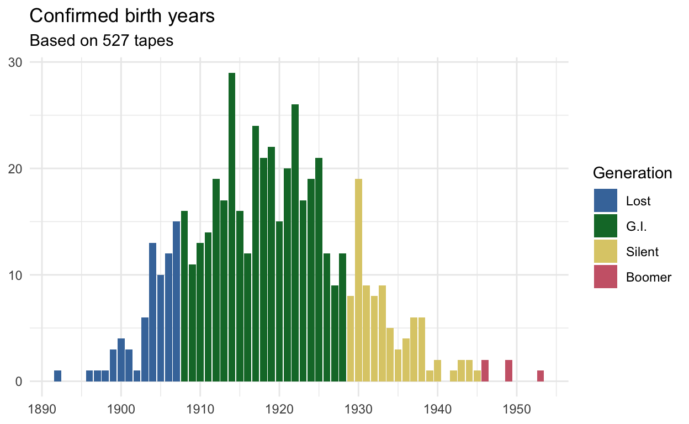

In 2021, I acquired a huge collection of cassette tapes I’ve called the Kohler tapes. In my first blog post about it, I geeked out about how much data I had collected. A few months later, I gave an update since at that point they were all digitized and cataloged, and I had listened to a couple dozen. I’m excited to give a second update with the news that I’ve just gotten a grant to cover the costs of processing all these tapes!
Progress since 2021
At the end of my previous update, I mentioned that I had gotten a John Topham and Susan Redd Butler BYU Faculty Research Award from the Redd Center for Western Studies. That provided just enough funds to hire an RA to help with metadata extraction. As I’ve mentioned already, a great many of the tapes start off with the student interviewer staying their name and the date, and then they ask basic demographic questions about their interviewee. It’s important that I know as much of the metadata about these interviewees as I can so that I can prioritize which tapes I should process first.
So, my RA listened to the first five or so minutes of each tape and wrote down as much metadata as they could. They then looked up that person on FamilySearch, a genealogical database. If they could find the person, they could then flesh out the rest of their basic metadata as well as get tons of other information like places they’ve lived and their family ancestry. Not all interviews had good metadata and not all tapes had much information written on the outside, but between those two sources, my RA was able to get full metadata for 505 of 751 people (67%), which is pretty good if you ask me. I can now give updated version of figures I had in my last update that summarized a little bit more about these people.
Gender split: 56%-44%
Only male and female genders are reported. There are 448 women (56%) and 346 men (44%).
Birth Years: 1892–1953
I have birth years for 527 people. They range from 1892 to 1953, with both the median and average birth year being 1919. Previously, I only went back to 1905, so this extends that range a little bit. Here’s an updated plot showing the distribution of birth years.

This is a pretty satisfying bell curve if you ask me. It makes sense that we’d see a distribution like that: these people were grandparents (or around that age) of the eighth grade interviewees between 1986 and 2001. I predicted early on before seeing this metadata that most people would be born between 1900 and 1940. That turned out to be pretty spot on. In fact, a full 69% of people are in the GI generation, which is 1908–1928, and there are only five Baby Boomers. So, this is pretty cool because these people are primarily the current oldest generation’s parents. Unfortunately, it means I won’t be able to look at much change over time using just this collection, but it’ll provide a nice point of comparison for other data.
Place of Birth: Still primarily Wasatch County
In my previous post, which was based on just 28 people, I found that people were mostly from Wasatch County. That makes sense since the interviews took place in Heber, the seat of Wasatch County. But, with more complete metadata, I see that there are many, many more places represented.
47% of the people are from Wasatch County, and 22% of the total are from Heber. Interestingly, the second-most common category was people born outside of Utah. Salt Lake County is next (most of those are from Salt Lake City proper), which makes sense since it’s the most populus county and is pretty nearby. Utah County (most of those are from Provo) is next, and is just down Provo Canyon and is on the other side of Mount Timpanogos. Summit County (primarily folks from Park City), is just north of Wasatch County and is next.
I mentioned last time that I suspect a significant proportion of Heber is represented in this collection. The 1940 Census had 2,748 people. I have data from 128 of them. That’s only 4.6% of them. BUT, that’s not any 128 people, that’s 128 young people. If I had more census-data-hacking skills, I’d give more specific details about the proportion of Heber by age group, but it’s probably a decent proportion.
Combing through the specific birth places, there were three people born in ghost towns!
- One person was born in Bingham Canyon, which is a town that once existed in southwest Salt Lake County. It not only no longer exists, but the land it was built on is literally gone. It has been completely devoured by Bingham Canyon Mine.
- One person was born in Victor, Emory County. This town only existed from 1910 and 1920. According to Wikipedia, it was founded when a nearby dam broke and residents of the nearby town of Desert Lake relocated to more fertile area. Turns out it wasn’t a great place, so they abandoned it.
- One person was born in Rockport, Summit County, a town that was inhabited for nearly a century before the Rockpoint Reservoir was created and now covers almost the whole site.
- I guess the opposite case is the person born in Vineyard. As of the 2010 Census, there were just 139 people who lived in this town close to Provo. Since 2012 though, the town has exploded into since then to over 100 times that size. The area has been called Vineyard since 1899 and one person was born there in 1914.
I don’t know what to do dialectologically for people born in ghost towns, especially that person from a town that only existed for 10 years. But it’s kinda fun to think about what the variety there was like or what it could have been like.
What to do with this information?
Okay, so that’s where things have been for about two years, thanks to the hard work of an RA. With this information, I have a better idea of the nature of this collection.
One of the main reasons I wanted this complete picture of the demographics is so that I could start to narrow down which tapes I should transcribe first. There are 751 tapes and limited resources, so I don’t want to just start transcribing them randomly. Since the collection is so large, I have the luxury of picking out a nice sample to start with. For example, I could select a relatively homogeneous group and go with people from Heber born within a five year range. Or, I could choose two people from each county and get a wide sample of Utah.
I think my priority for now will be to compare Heber to Wallsburg. Heber is the seat of Wasatch County and while it has grown a lot since the 2002 Olympics, it historically has been a small town. But, Wallsburg is a smaller nearby, tucked away two mountains outside of Heber Valley.
Why Wallsburg? Well, when I did fieldwork in Heber in 2018, I heard that Wallsburgers were made fun of in school for being the country bumpkins or whatever. And when I introduced myself as a linguist studying Wasatch County, it seems like everyone in Heber I talked to said I needed to go down to Wallsburg (“That’s where the real Utah accent is!”) So I went down there, knocked a few doors asking to interview people, and eventually found a nice older woman who had lived there most of her life. Sure enough, pretty much every feature of Utah English I was studying she had to the max. So, if she’s representative of her town, there may really be linguistic differences between Heber and Wallsburg!
Anyway, I’ve already got a list of the first dozen or so tapes I’d like to get transcribed. It’s 12 women born between 1908 and 1927 with six from Wallsburg and six from Heber. It should be a nice comparison and a good first look at what this collection has to offer. (Stay tuned ADS 2025!)
Next steps
Okay, so that’s where I’ve been sitting on for about a year or so. But, staring down the barrel of hundreds of hours of audio is daunting, and I never really made much progress on this project since then. However, recently, I met a student who has connections to Heber and was interested in working on the collection. So, I applied for a the Annaley Naegle Redd Assistantship from Redd Center for Western Studies (the same folks that funded my earlier RA) to fund them for a few semesters. And I found out today that I will be awarded the grant! Hooray!
As I mentioned in my last post, to transcribe all of these tapes manually, I estimated it would take about $100,000 and 14 student workers two years of time. My grant is certainly not that much! BUT, I don’t think I’ll need that much anymore!
The main bottleneck in sociolinguistic data processing is transcription. Once something is transcribed, we can then send it through forced alignment and formant extraction without much problem. But automatic transcribers haven’t been good enough for sociolinguists’ needs. But, just in the past year, some interesting possibilities have opened up thanks to AI. In particular, OpenAI’s Whisper program is accessible via an R package. I’ve played around with it on some of these tapes and the result is pretty good.
So, this semester I’ve been working on a fully automated pipeline that takes raw audio, transcribes it at the utterance-level with Whsiper, converts the output to a Praat TextGrid, sends that to the Montreal Forced Aligner, sends that output to FastTrack, and then spits out a spreadsheet of formant measurements. It takes a few scripts between each step to massage the output into a format that the next step likes, but I got a proof-of-concept working. From raw audio to vowel plot, it takes about 10 minutes.
Assuming I can get it all working well, I won’t need $100,000 to have manual transcriptions. Instead, I can have students send the files down this pipeline and check the automatic transcription instead. This means they can work through tapes faster and process more data in far less time. So, with this grant, if everything goes well, I’ll be able to process a significant chunk of the Kohler Tapes!
So that’s it for now. Stay tuned for more updates and soon enough you’ll see some actual linguistic results at conferences and in publications!